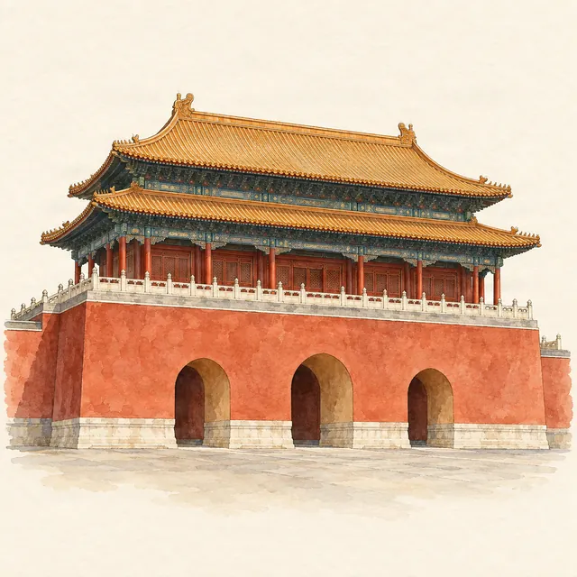

Forbidden City · getting in and out
Forbidden City entrance and exits
Last checked:

Where is the entrance to the Forbidden City?
There is one visitor entrance, the Meridian Gate (午门, Wumen) on the south side, and two exits: the Gate of Divine Might (神武门) to the north, opposite Jingshan Park, and the East Glorious Gate (东华门) to the east. The palace is about 960 metres from south to north, and you cannot come back in once you leave.
How do I get to the Meridian Gate by metro?
The nearest stations are Tian'anmen East and Tian'anmen West on Line 1. From there, the museum gives two ways in:
- If you have booked only the Forbidden City: walk along the moat-side roads, from the East or the West Glorious Gate, south to the Meridian Gate. This avoids the Tian'anmen Square security queues.
- If you have also booked Tiananmen Square: go through the square's security checks, then north through Tian'anmen and the Duanmen gate to the Meridian Gate. This passage is open Tuesday to Sunday, 08:00–16:00, and runs one way, north.
Leave plenty of time: queues for security are longest on weekend and holiday mornings.
Can a taxi drop me at the entrance?
Not right at it: the museum has no car park, and the Meridian Gate is reached on foot. Ask to be dropped at the East Glorious Gate (故宫东华门) and walk south along the moat-side road to the Meridian Gate. The East Glorious Gate is an exit only, so do not queue there. Show the driver the name in Chinese; there are printable cards in Chinese address cards for Beijing sights.
What do I need at the gate?
- The original passport you booked with: your passport is your ticket.
- A booking for today: tickets are not sold at the gate. See how to book.
- Time for a security check of bags. Suitcases and bags of 20 inches or more must be left at the bag store on the west side of the Duanmen square, and are collected at the exits, outside the Gate of Divine Might or the East Glorious Gate.
Which exit should I use?
The Gate of Divine Might (north) is the natural end of a walk along the central axis. Across the road is the South Gate of Jingshan Park, the best view of the palace you have just walked through. Buses 58, 101, 103, 109 and 124 stop outside at Shenwumen. There is no metro station next to it.
The East Glorious Gate (east) suits you if you finish in the east of the palace, near the Treasure Gallery, or want to go on to Wangfujing for food and shopping. Wangfujing's main street is about 800 metres east along Dong'anmen Street.
The West Glorious Gate is staff only, and you cannot leave by the Meridian Gate.
How long is it from the entrance to the exit?
Walking straight up the central axis with no stops takes about a quarter of an hour; nobody does that. A visit along the axis with short stops takes about 1 hour 40 minutes before queues, and 3–4 hours with a side trip; see the half-day route. Toilets, cafés and mother-and-baby rooms are spaced along the route; bring water anyway.
Which way round should I visit with Jingshan Park?
The palace is strictly one-way, south to north, so the order is fixed: Forbidden City first, then out through the Gate of Divine Might and across to Jingshan. Jingshan stays open long after the palace closes (until 20:00 or 21:00 depending on the season), so finishing on the hilltop near sunset works well.
Can I see the gates on a map offline?
Yes. Penyola's Forbidden City map shows the entrance, both visitor exits and the walks between them, and the visitor information with the address in Chinese, all stored on the phone.
More planning guides
- Forbidden City tickets for foreigners
- The Forbidden City in half a day
- Jingshan Park: the best view of the Forbidden City
- Chinese address cards for Beijing sights
Sources
Checked on these official pages on 9 November 2026: